Tutorial: To Use Anypoint MQ
This tutorial helps you send and receive messages using Anypoint MQ using a publish/subscribe queue mechanism. Anypoint MQ provides a user interface built into Anypoint Platform that lets you send messages to a queue or message exchange, and then read the messages from a queue. Anypoint MQ also provides a connector that works with Anypoint Studio.
Prerequisites
-
Read About Anypoint MQ.
-
Create an Anypoint Platform account to configure an environment, user permissions, register applications in MQ, and to create queues and message exchanges. You can access Anypoint MQ from the main Anypoint Platform screen and the left navigation bar. You can also open or close the left navigation bar by pressing the Escape key on your keyboard, or by clicking the menu icon at the upper left of the screen.
-
An Enterprise license is required to use MQ.
-
Download and install Anypoint Studio.
Queue and message exchange names can contain alphanumeric characters (a-z, A-Z, 0-9), dots (.), and dashes (-). All other characters are not allowed. Queue and message exchange names are limited to 127 characters in length.
To Create a Queue
A queue provides a temporary area for holding messages. Applications push messages to the queue, and other applications consume the messages. In Anypoint MQ, you can read messages, return the messages for later viewing, or delete a message. By default, messages return to the waiting area so that other applications can read them. Messages persist until the time to live (TTL) value expires—by default, a message persists in Anypoint MQ for 7 days.
-
Log into Anypoint Platform and click MQ.
-
Click Destinations:
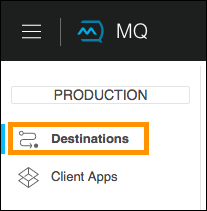 -
Click the blue plus icon .
-
In the drop-down, click Queue:
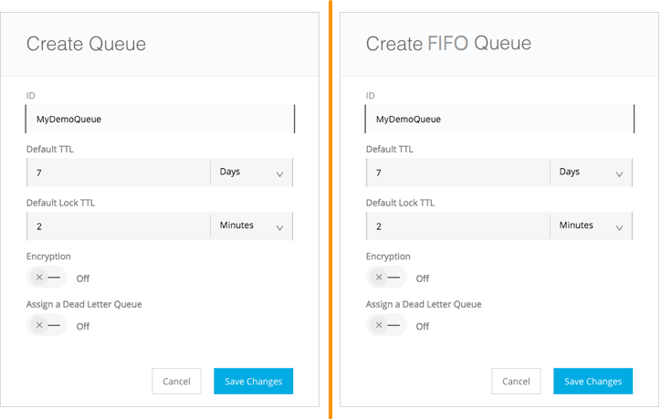 -
In the Create Queue screen, specify a name for the queue, and if needed, change the Default TTL (time-to-live) and Default Lock TTL values. A message lock makes a message unavailable to other applications while locked. A locked message does not block other messages to be read.
-
If you want your queue encrypted, slide the encryption slider to the right.
-
If your organization previously created a dead letter queue where undeliverable messages go, click Assign a Dead Letter Queue to enable this option. For more information on dead letter queues, see To Create a Queue.
-
When done, click Save Changes:
The queue creates and you are returned to the Destinations screen.
Note: Where you click on a queue entry in the Destinations screen governs what you see next:
Note: If you need to delete a queue, see How do I delete a queue? in the Anypoint MQ FAQ.
To Send a Message to a Queue
-
Log into Anypoint Platform and click MQ.
-
Click Destinations.
-
Click the MyDemoQueue entry in Destinations to view details about the queue.
-
Click the left side of the queue entry to open the Messaging feature, or click the right side of the queue entry and click the arrow to the right of the queue name:
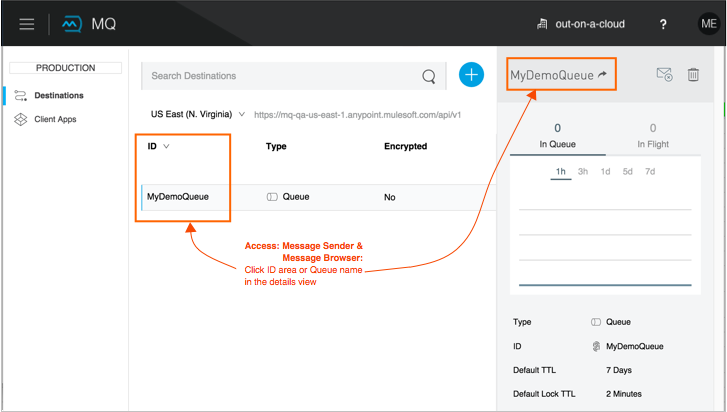 -
In the settings page, click Message Sender:
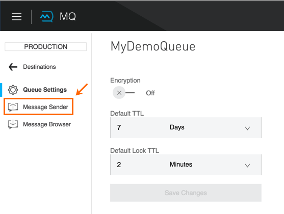 -
Type text in the Payload such as
Hello Mules(leave the Type field set to Text):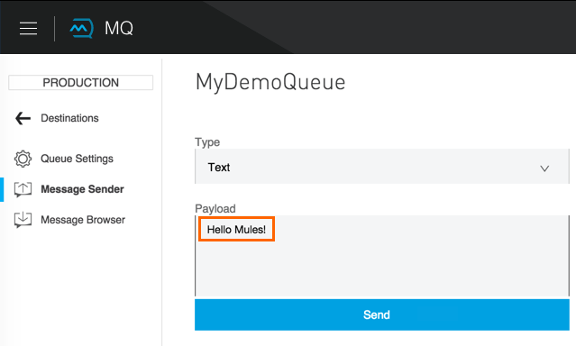 -
Click Send.
To Verify the Message in a Queue
-
Click Destinations.
-
Click the right side of the queue entry to view details and see the number of messages in the queue:
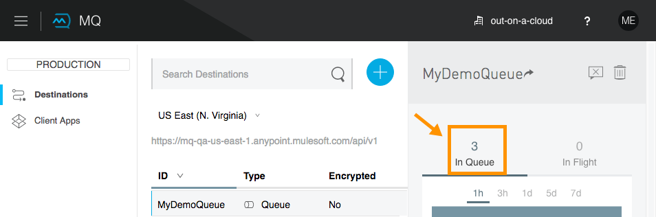
To Get a Message From a Queue
-
Follow the directions in To Send a Message to a Queue and advance to Step 6, except click Message Browser:
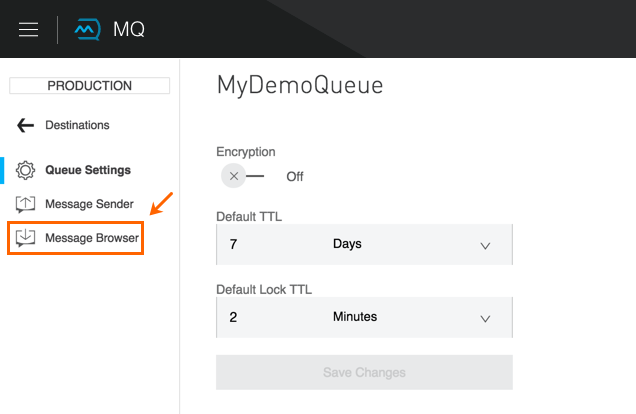 -
Click Get Messages.
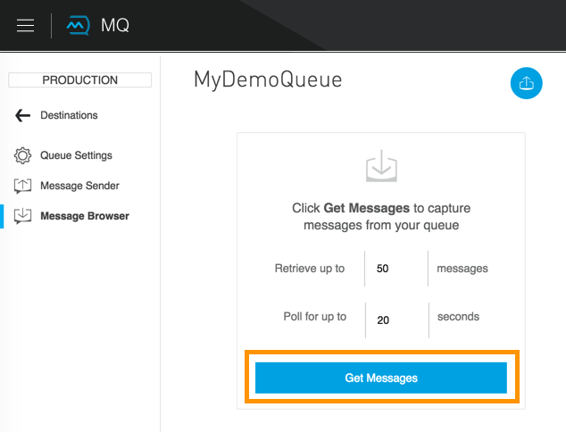 -
Click the message ID value to view the message.
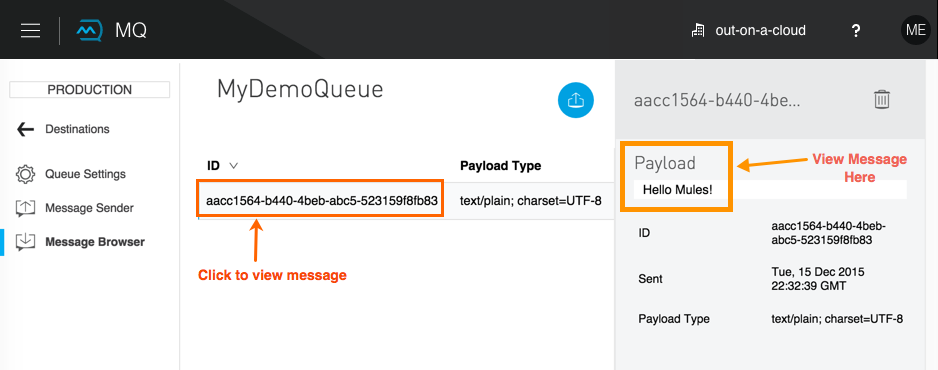 -
If you want to return the message to the queue, so other applications can read the message, click the Return Messages icon - this is the default condition. If you switch screens back to the Message Sender or to Destinations, messages automatically return to the queue. In Anypoint MQ, returning the messages to the queue is known as
nack- the message is not altered. However, the time to live (TTL) value you set when you created your queue determines how long the message is available before Anypoint MQ deletes it.Alternatively, you can delete the message by clicking the trash can icon. Anypoint MQ provides three modes for how messages delete after they are viewed. For more information, see Anypoint MQ Acknowledgement Mode.
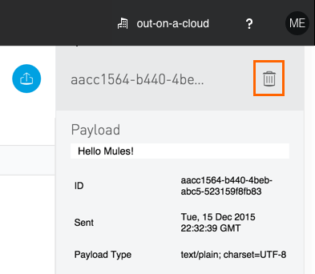
Now you are able to send and receive messages in Anypoint MQ. In the next section, you can try alternate ways of formatting messages.
To Send a CSV or JSON Message
-
Click Message Sender.
-
Set the Type to JSON.
-
Set the Payload to:
{ "animal that walks":"dog", "animal that swims":"fish", "animal that flies":"parrot" } -
Click Message Browser and the message ID to view the message:
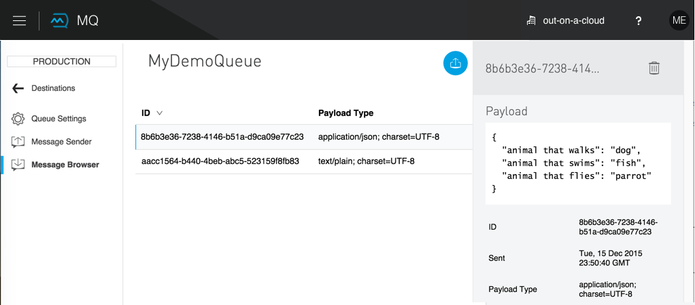
To send a CSV message:
-
Click Message Sender.
-
Set the Type to CSV.
-
Set the Payload to:
"dog", "fish", "parrot"
-
Click Message Browser and the message ID to view the message.
To Register a Client Application
-
Log into Anypoint Platform and click MQ.
-
Click Client App:
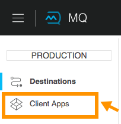 -
Click the blue plus icon .
-
Specify an application name such as
DemoClientAppand click Save Changes.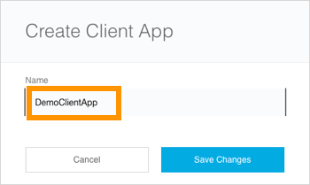 -
Leave the Client Apps window open as you need to copy and paste the Client ID and Client Secret into the configuration for Anypoint Studio in To Create an Application.
To Configure Studio for the Anypoint MQ Connector Plugin
-
In Studio, click Help > Install New Software:
-
Click the drop-down menu for Work With and select Anypoint Connectors Update Site:
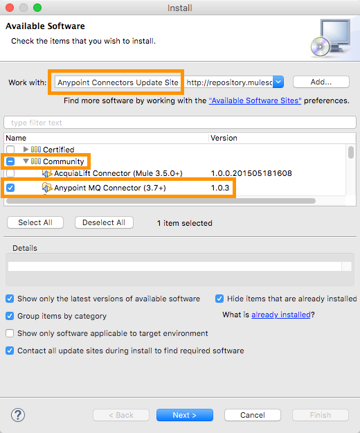 -
Expand Community and click Anypoint MQ Connector.
-
Click Next.
-
Follow the prompts to install the connector and restart Studio when requested.
To Create an Application
-
Create a new Mule Project. Click File > New > Mule Project. Name the project "mqdemo".
-
Search for "http" and drag the HTTP Connector to the Studio Canvas.
Here’s what we want to construct:
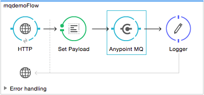-
Search for "set" and drag Set Payload to the Canvas.
-
Search for "mq" and drag the Anypoint MQ connector icon to the canvas.
-
Search for "logger" and drag Logger to the Canvas.
-
-
Click the HTTP Connector and click the green plus sign to the right of Connector Configuration:
-
In the HTTP Connector’s Global Element Properties accept the defaults, and click OK.
-
Set the Path to
/mq/{messageId}: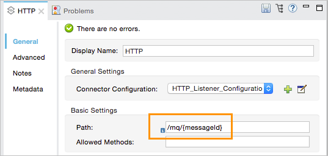 -
Click Set Payload in the Canvas and set the Value to:
#[message.inboundProperties.'http.uri.params'.messageId]
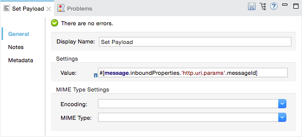 -
Click the Anypoint MQ connector, and click the green plus sign to the right of Connector Configuration:
-
In the MQ Connector’s Global Element Properties window, add the information from Anypoint Platform:
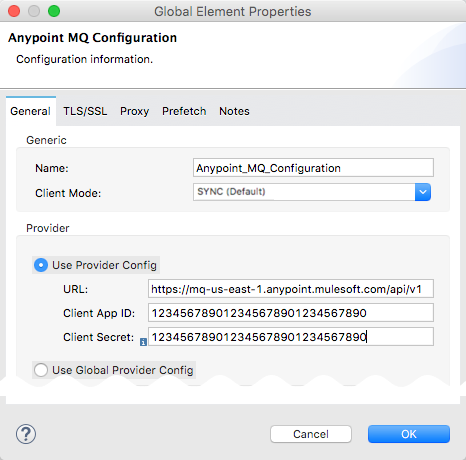-
Copy the Anypoint Platform’s Client App > Client App ID value to the Studio Client ID field.
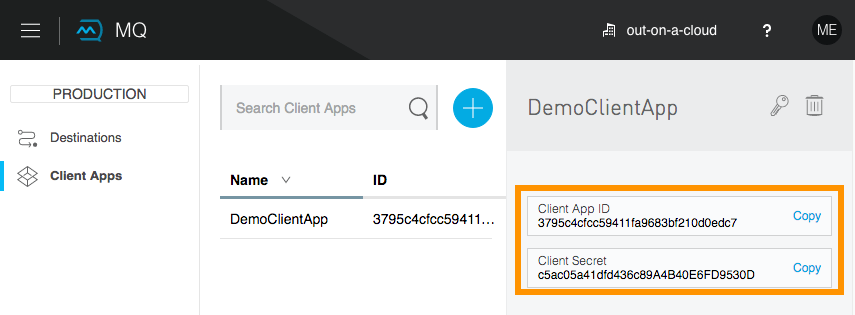 -
Copy the Anypoint Platform’s Client App > Client Secret value to the Studio Client Secret field.
For more information on other options and tabs, see Advanced Global Element Properties in Configuring MQ in Anypoint Studio.
-
Click OK.
-
-
Click the Operation field and specify the
publishoperation.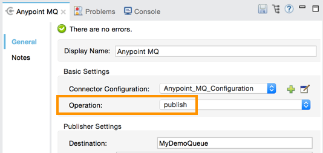 -
Specify the Destination as
MyDemoQueuethat you set in Anypoint Platform: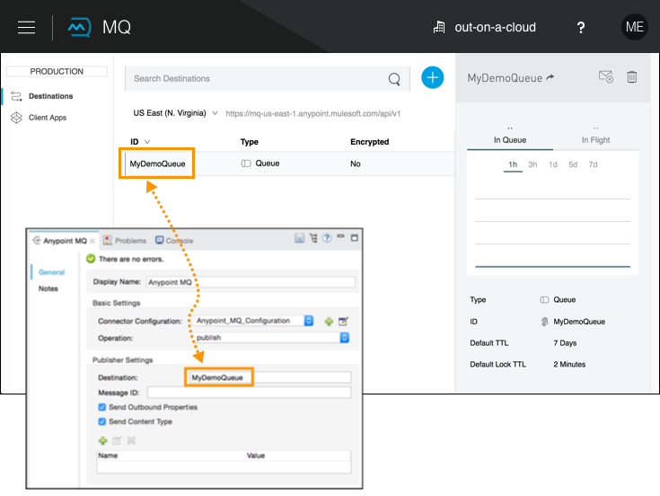 -
Click the Logger and set the Message field to:
MQ Message: #[payload]
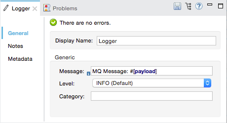 -
Save your project.
To Verify XML
After you configure your application using the MQ Connector, you can check your configuration against this XML.
Click Configuration XML in Studio and compare your XML to the following. If needed, you can make corrections.
<?xml version="1.0" encoding="UTF-8"?>
<mule xmlns:anypoint-mq="http://www.mulesoft.org/schema/mule/anypoint-mq" xmlns:http="http://www.mulesoft.org/schema/mule/http" xmlns="http://www.mulesoft.org/schema/mule/core" xmlns:doc="http://www.mulesoft.org/schema/mule/documentation"
xmlns:spring="http://www.springframework.org/schema/beans"
xmlns:xsi="http://www.w3.org/2001/XMLSchema-instance"
xsi:schemaLocation="http://www.springframework.org/schema/beans http://www.springframework.org/schema/beans/spring-beans-current.xsd
http://www.mulesoft.org/schema/mule/core http://www.mulesoft.org/schema/mule/core/current/mule.xsd
http://www.mulesoft.org/schema/mule/http http://www.mulesoft.org/schema/mule/http/current/mule-http.xsd
http://www.mulesoft.org/schema/mule/anypoint-mq http://www.mulesoft.org/schema/mule/anypoint-mq/current/mule-anypoint-mq.xsd">
<http:listener-config name="HTTP_Listener_Configuration" host="0.0.0.0" port="8081" doc:name="HTTP Listener Configuration"/>
<anypoint-mq:config name="Anypoint_MQ_Configuration" doc:name="Anypoint MQ Configuration">
<anypoint-mq:provider url="https://mq-us-east-1.anypoint.mulesoft.com/api/v1" clientId="<client_ID_value>" clientSecret="<client_secret-value>"/>
</anypoint-mq:config>
<flow name="mqdemoFlow">
<http:listener config-ref="HTTP_Listener_Configuration" path="/mq/{messageId}" doc:name="HTTP"/>
<set-payload value="#[message.inboundProperties.'http.uri.params'.messageId]" doc:name="Set Payload"/>
<anypoint-mq:publish config-ref="Anypoint_MQ_Configuration" doc:name="Anypoint MQ" destination="MyDemoQueue"/>
<logger message="MQ Message = #[payload]" level="INFO" doc:name="Logger"/>
</flow>
</mule>To Run the Studio Application
In Anypoint Studio, click the project name in Package Explorer, and click Run > Run As > Mule Application.
The output should end with these statements:
++++++++++++++++++++++++++++++++++++++++++++++++++++++++++++
+ Started app 'mqdemo' +
++++++++++++++++++++++++++++++++++++++++++++++++++++++++++++
INFO <date_and_time> [main] org.mule.module.launcher.DeploymentDirectoryWatcher:
++++++++++++++++++++++++++++++++++++++++++++++++++++++++++++
+ Mule is up and kicking (every 5000ms) +
++++++++++++++++++++++++++++++++++++++++++++++++++++++++++++
INFO <date_and_time> [main] org.mule.module.launcher.StartupSummaryDeploymentListener:
**********************************************************************
* - - + DOMAIN + - - * - - + STATUS + - - *
**********************************************************************
* default * DEPLOYED *
**********************************************************************
*******************************************************************************************
* - - + APPLICATION + - - * - - + DOMAIN + - - * - - + STATUS + - - *
*******************************************************************************************
* mqdemo * default * DEPLOYED *
*******************************************************************************************To Test Your Application
Get a REST plugin for your browser so that you can send POST requests. Typical software:
The following is an example setup using Postman:
To set up Postman for a REST POST:
-
Specify the URL to send the message as
0.0.0.0:8081/mq/Hello. You can also specify messages with spaces such as,0.0.0.0:8081/mq/My What A Great Message. -
Click POST in the drop-down options menu.
-
Click Send to post the message. You can send more than one message if you prefer.
-
View the resulting reply from the Anypoint Studio web server.
To View Your Message in Anypoint MQ
-
Log into Anypoint Platform and click MQ.
-
Click Destinations.
-
Click
MyDemoQueueat the right side to view the number of messages in the queue: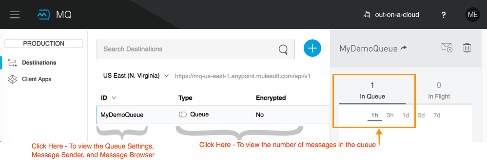You can see the number of messages in the queue. Having verified that you have messages, we can now view them.
-
Click
MyDemoQueueat the start of the entry to view the Queue Settings, Message Sender, and Message Browser.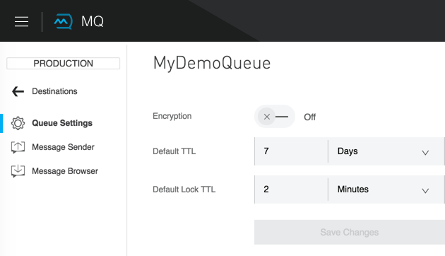 -
Click Message Browser and click Get Messages:
-
Click a message ID and view the message to the right.
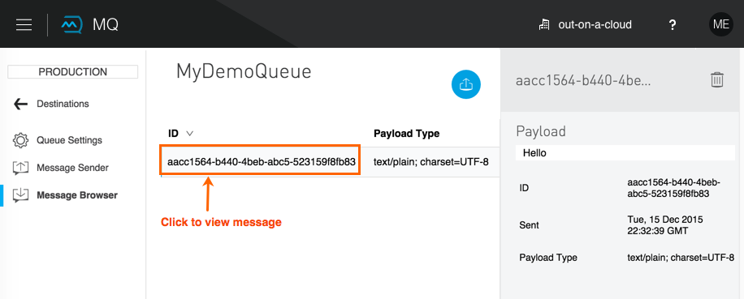
You can repeat this process by returning to your REST POST application and sending and viewing more messages. In the next section, we build on your knowledge, first with an administrative task of creating user roles and then creating and testing message exchanges, which let you send one message to multiple queues.
To Create a Message Exchange
A message exchange groups one or more queues so that a message sent to the message exchange goes to all bound queues.
-
Log into Anypoint Platform and click MQ.
-
Click Destinations.
-
Click the blue plus icon .
-
Click Exchange.
-
Specify the name
MyDemoExchange. -
Click the checkbox to bind MyDemoQueue to this message exchange.
-
Click Save Changes.
-
In the Destinations screen. click the message exchange Type to list its details.
To delete a message exchange, see How do I delete a Message Exchange? in the Anypoint MQ FAQ.
To Bind a Queue to a Message Exchange
-
Log into Anypoint Platform and click MQ.
-
Click Destinations.
-
Click the left side of the message exchange entry in Destinations.
Note: Where you click on a message exchange entry in the Destinations table governs what you see next:
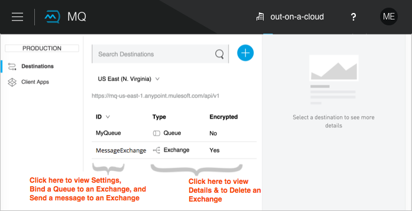 -
In the Exchange menu, click Bind for each queue you want to bind to the message exchange:
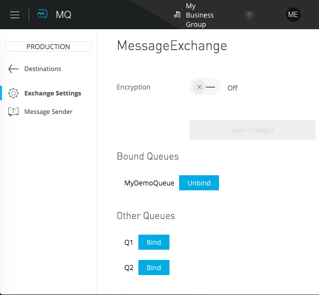
To Send a Message to a Message Exchange
Sending a message to a message exchange is very similar to sending a message to a queue. The only difference is that you can get the message from any queue bound to a message exchange.
-
Log into Anypoint Platform and click MQ.
-
Click Destinations.
-
Click the
MessageExchangeentry in Destinations to view details about the message exchange. -
Click the MessageExchange link in the details screen to access the Message Sender:
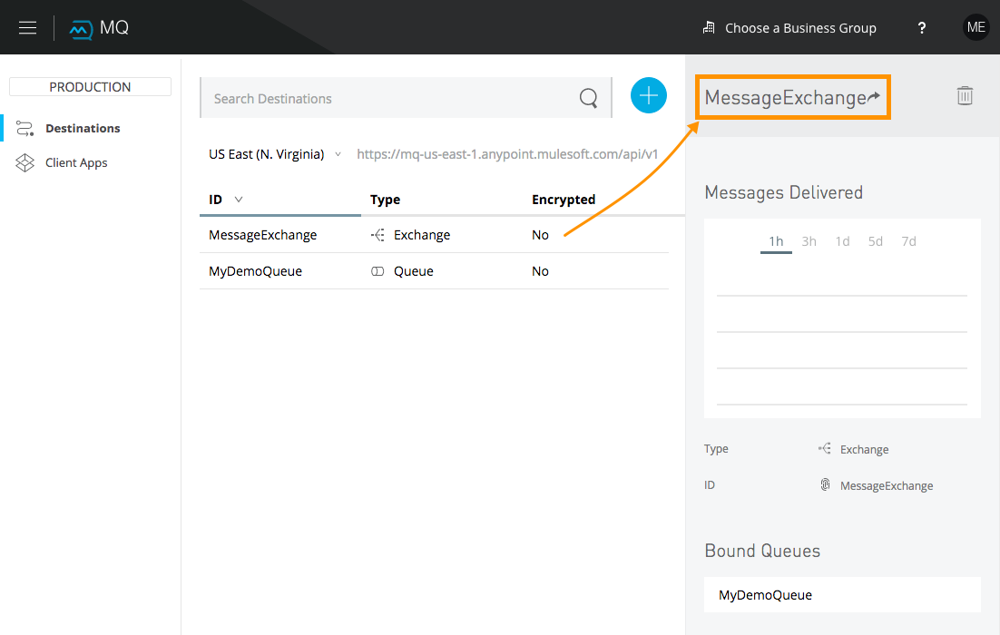 -
Click Message Sender:
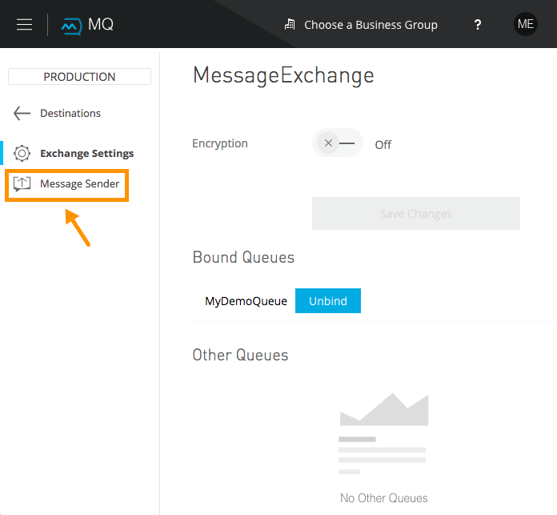 -
Type the contents of the Payload and click Send:
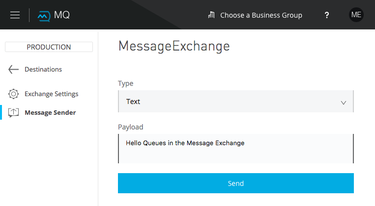
You can now use the Message Browser to get the message from the MyDemoQueue as described in To Get a Message From a Queue.
You can also send comma-separated value (CSV) or JSON content in the payload by changing the message Type value. For more information, see To Send a CSV or JSON Message.